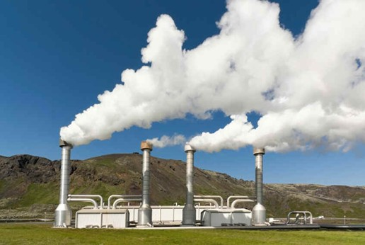

*Em meio ao século XXI vemos lugares e pessoas sem o basico para sobreviver , lugares onde ainda não existe energia de nenhuma forma,
pessoas que estão abaixo da linha da pobresa e vive com oo minimo de R$ 150,00 a 200,00 Reais, onde vive a base de (lampião) ou vela ,
em meio a grandes tecnologias , grandes riquezas existem pessoas que vivem no escuro , toma banho a base de agua fria ou aquecida no fogão.
Outro modelo que podemos falar e o Biogás que e um gas inflamavel que e produzido a partir de uma mistura de dióxido de carbono e metano , por meio
de bacteriaas fermentadoras em matérias orgânicas.
*Energia Eolica seria outro modelo alternativo de Geração de energia de baixo custo e que serveria a todos ,
más nao existe (patrocinios ) pois o Investimento e bastante alto , e não e em todos os estados que possuem condiçãoes climaticas ,
pois esse modelo de energia e princinpalmente usado em areas Grandes e de grande nivél de Rajadas de vento , nem todos os estados tem o clima
parecido com as aréas onde ja existe .
